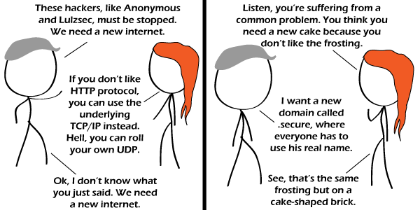

Comic JK 726
When I Feel Like It
⇤
<
?
>
⇥

⇤
<
?
>
⇥
Forum
.
RSS
.
Digg
.
Facebook
.
Reddit
.
Twitter
.
Stumbleupon
Enter your thoughts on number 726 here. Please, maybe spamming, trolling, phreaking, or sugar-coating the issue. Why wouldn't the gray guy just use IPoAC or something? Unless you're a neural scientist or hypnotist, you can't hack pigeons See: OH GOD! There was a link here, I highlighted it and wanted to paste it into my browser and accidentally pressed "paste" instead of copy and now it's gone!!!! So sorry =( - Oh, wait... google cache... here it is: huffingtonpost.com/2011/07/15/cyber-security-network-private-internet_n_899364.html > That's terrible. I really hate the part when he says that some companies already use "private internets". Ugh. You do understand that private internets exist, right? Of course, that's internets with a little i, not the Internet. >>Some already use private intranets though. Those are easy to make. I used to have 3 of them at home. >>>I make my own internets at home! >>>>That link has given me more laughs than anything else this year - I know, lets use .secure for a "secure" internet and .com or .net or... oh bugger, oops! >>>>>Well yes, putting .secure after something automatically makes it secure. Duh! >>>>>>But if more people move to .secure, .com will become less secure! More hacker:citizen ratio. What could solve this problem is giving those "code experts" something better to do; such as giving them Dev kits for all the consles/handhels, and maybe invent a machine that can make cures of diseases from code. I know: .expensive! $1000/month fee for registration; only the *real* companies can afford to buy them. >Brilliant! What could possibly go wrong! SPAAAAAAAAAAAAAAAAAAAAAAAAAAAAAACE!!!!!! give a man a fish and feed him for a day! Give him the internet you won't see him for a week!!!